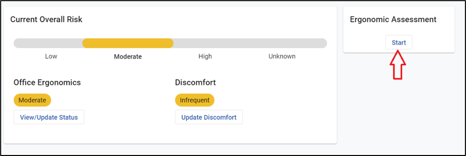
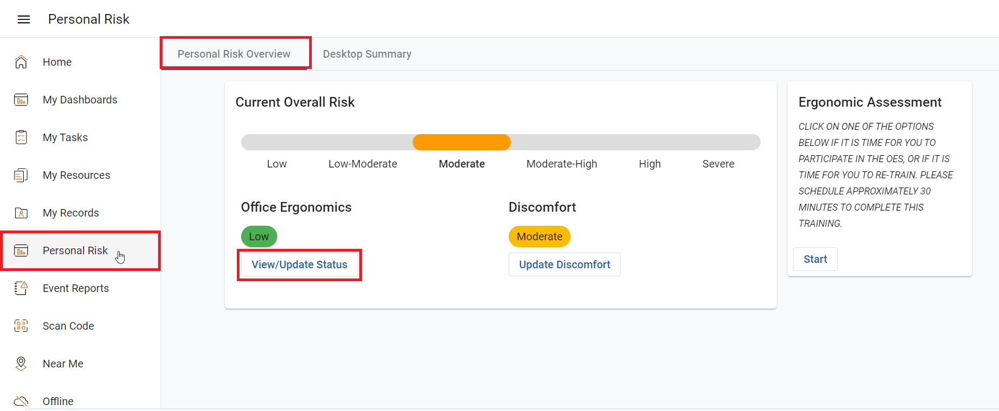
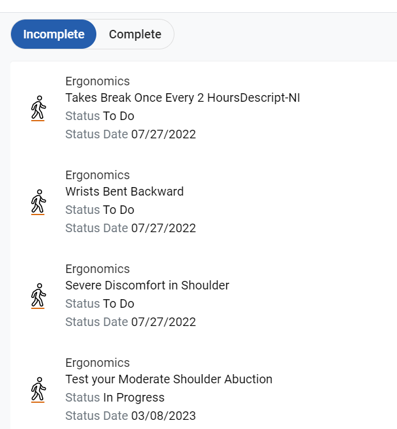
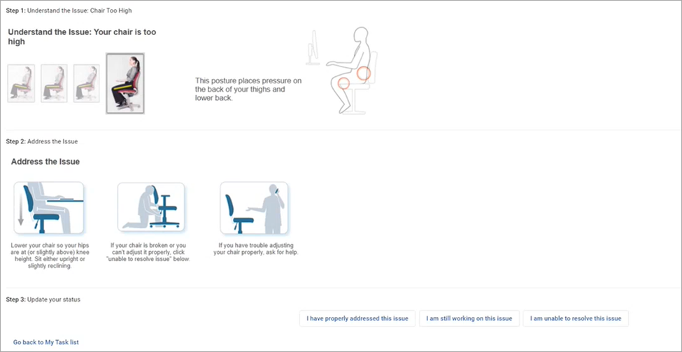
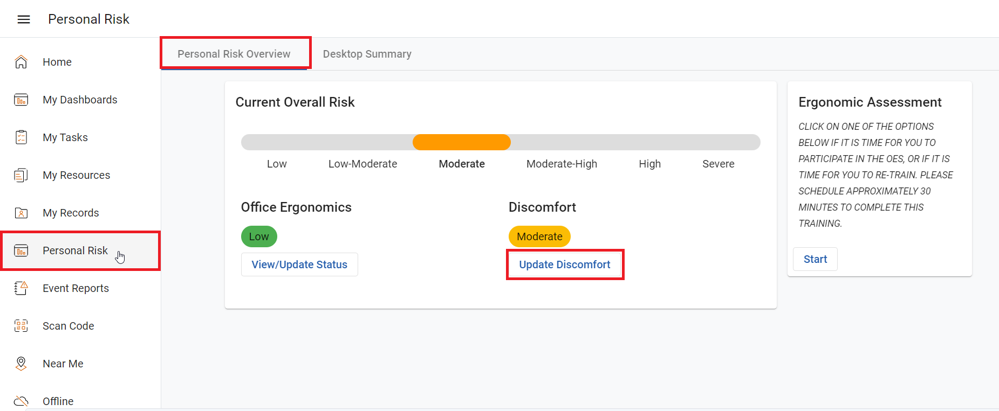
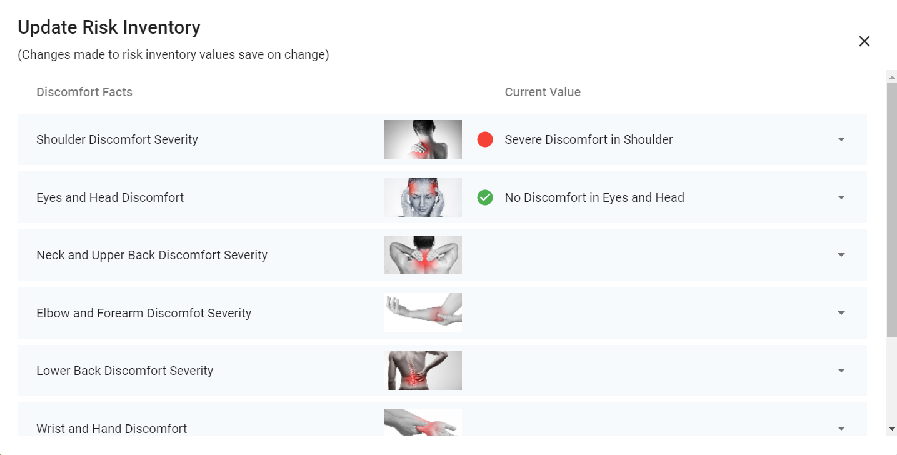

In the Personal Risk Overview tab, users are provided with tasks to follow and complete to prevent repetitive strain injuries, musculoskeletal disorders, and other workplace injuries from happening, and to update whether they were able to complete the task or resolve the issue . Users can also complete self-assessments to provide the current status for each discomfort listed.
If you have not previously completed the self-assessment, you will only see a link to start it. When you click the link to start the self-assessment, you will be guided through a series of questions. Your risk level will be calculated based on your responses, and the corporate ergonomist will be able to review them and contact you to assist in resolving any issues if necessary, with the aim to reduce or eliminate your risk.

If you have previously completed the Office Ergonomics self-assessment, you will see your current overall risk as well as the risk for each risk type captured (e.g. Office Ergonomics, Discomfort, etc.). The color indicator reflects the risk level associated with your responses. Green represents the ideal/neutral value, and non-neutral values are shown as yellow or red depending on their calculated risk score.
To view issues that need to be resolved (yellow or red):
On the Home view, click Filter by Ergonomics. or
On the Personal Risk view, click View/Update Status below a risk type that has an yellow or red indicator
To View/Update Status of Office Ergonomics

Click Personal Risk in the side menu.
Ensure the Personal Risk Overview tab is selected.
Under 'Office Ergonomics', click View/Update Status. My Tasks window opens with a list of Ergonomics issues to review and complete.

Select an issue, a new window will open for the issue with recommendations.
Once the process has been read and attempted, select one of the following:
I have properly addressed this issue -- Resolves the issue and sets it to the neutral state (no risk)
I am still working on this issue -- Changes nothing and allows you to come back later to update
I am unable to resolve this issue -- Escalates the issue to the ergonomist to contact you to assist.

To Update Discomfort

Click Personal Risk in the side menu.
Ensure the Personal Risk Overview tab is selected.
Under 'Discomfort', click Update Discomfort. The Update Risk Inventory window will open with two columns; Discomfort Facts, and Current Value. The Discomfort Facts is a list of body parts that feel discomfort due to repetitive strain. The Current Value is where users can click a dropdown textbox for each body part to provide a value of their current discomfort (no discomfort, minimal discomfort, moderate discomfort, or severe discomfort).

Once all information has been accurately filled in, click the X icon at the top of the Update Risk Inventory window to close the window. All updates made will automatically be saved.